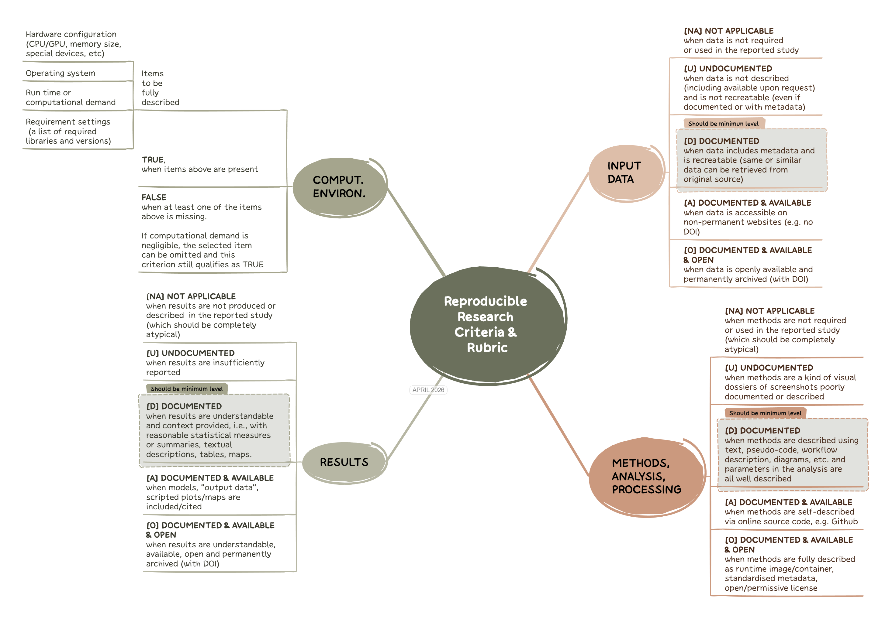

7 Assessment Criteria
7.1 Why to reproduce
Why do you want to reproduce a paper or research study?
Advance knowledge – Will reproducing this study yield generalisable, useful insights?
Replication value – How important is confirming the study findings? “If it was valuable enough to publish, it is valuable enough to replicate” (Feldman 2025)
Replication value is defined as a metric for prioritising studies for replication based on their impact and credibility (Feldman 2025).
Personal motivation – Why does this study matter to you? Is it relevant to your research? Skills development by learning via reproduction/replication?
Feasibility – Do you have the data, tools, time, and skills required? Technical requirements (equipment, lab setup, etc) Enough expertise? Can you really do it?
Prior replications – Has anyone already attempted or published a reproduction? Are findings conclusive?
Whatever motivated your choice, if a paper interests you enough to attempt reproduction you should first understand its methods and materials in detail. Before starting a full reproduction, assess the paper’s pre‑reproducibility (Stark 2018): as a reader or reviewer, do you have access to the data, code, parameters, and documentation needed? Are the methods and dependencies described clearly? How feasible would it be to reproduce it?
In the context of the Reproducible Research @ AGILE, we proposed a set of criteria to evaluate the degree of reproducibility of an article (Nüst, Granell, et al. 2018). In that work, we evaluated a selection of papers published in the AGILE conference series. Later, using the same assessmebnt criteria and methodological approach, we evaluated the level of reproducibility of conference articles published in the GIScience conference series (Ostermann et al. 2021).

With the experience gained in the above studies, we revised the set of assessment criteria for reproducibility in a recent study (Granell et al. 2026) (see also published prereg study (Nüst et al. 2023)) and preprint (granell2025josispreprintjosis?)). The resulting criteria, which are compatible with the original ones, are shown in Figure 7.2, which in turn align nicely with the welcome illustration (see Figure 7.1) of The Turing Way project’s Guide for Reproducible Research.
7.2 Criteria
Figure 7.2 illustrates the four criteria of the rubric.
Input dataMethods, analysis, processingResultsComputational environment
The Input data and Results criteria remain unchanged with respect to initial version of the rubric [Nüst, Granell, et al. (2018)](Ostermann et al. 2021). The former Methods criterion, which included categories for preprocessing, analysis, and computational environment in previous studies, has been simplified into a single criterion: Methods, analysis, processing. This change avoids ambiguity and disagreements over assigning methodological steps to either preprocessing or analysis. Additionally, the Computational environment is now treated as a separate, fourth criterion. This reflects its broader role in computational research and data science, encompassing all code and infrastructure used for both analysis and result presentation.

Finally, numeric levels previously used in the past rubric are replaced with descriptive labels and single-letter codes. This enhances interpretability, because the levels were always only ordinal, and avoids any misinterpretation as to the differences in value between the labels, because efforts of going from one level to the next and the impact of a higher level compared to a lower one are far from equal steps orlinear relationships. The UDAO levels are, in ascending order of potential reproducibility:
- Not Applicable (NA)
- Undocumented (U)
- Documented (D)
- Documented and Available (A)
- Documented, Available, and Open (O)
For the Computational environment criterion, only a binary evaluation (True/False) is applied, recognising the challenges from past assessments to consistently assigning more granular levels.
7.3 Example: Reproducibility assessment of a conference paper
As example, let’s investigate this paper (or choose your own if you have a good contender): Developing a city-specific walkability index through a participatory approach, published in the AGILE 2024 proceedings.
How to proceed: In general, spend no more than 30 minutes on the assessment and avoid trying to fully understand the paper. Make a pragmatic judgement about how feasible reproduction is; if it looks likely (e.g. levels A and O), you can attempt a real reproduction later.
So, how to begin? Some ideas to read a paper with a computational perspective in mind are given by (Nüst, Boettiger, et al. 2018). Apart from useful guidelines published elsewhere, when assessing a scientific article –normally structured as Introduction, Methods, Results, and Discussion– look for sections that describe the datasets, methods, and tools used. The Methods or Data and Methods sections are the usual places to check. Also look for explicit data-and-software-availability statements (DASA), data declarations, or similar sentences, which are increasingly common in recent publications.
The data sources used in this study are presented in Table 2 and are openly available. In particular, the data sources used are the following: OpenStreetMap (2023) (OSM), Rijksinstituut voor Volksgezondheid en Milieu (2020) (RIVM),Ministerie van Binnenlandse Zaken en Koninkrijksrelaties(2023)(BGT), Gemeente Amsterdam (2020)(AOD),Rijkswaterstaat Ministerie van Infrastructuur en Waterstaat (2022) (BRON), OVapiB.V. (2023) (OV-API). For the data processing, we used Quantum GIS and Python.The PCA was made with the help of the software package Ken-Q from Banasick (2023). All software used is open-source and publicly available.The dataset, which includes the processed street-level walkability scores from this study, is publicly accessible and shared through a data portal (Cardoso, 2023).The data can also be explored through the open-access interactive web tool CTstreets Map.
Second, based on the DASA section or similar statements, do you think all inputs datasets/sources are publicy available? Do you have access to methods and tools (software code, etc)?
Third, if somebody else evaluated the same paper before, you can also look at the reproducibility report.
What do you think the study’s scores should be?
| Criteria | Reproducibility levels |
|---|---|
Input Data |
[UDAO] or NA |
Methods, Analysis, Processing |
[UDAO] or NA |
Results |
[UDAO] or NA |
Computational Environment |
[True/False] |
| Criteria | Reproducibility levels | Notes |
|---|---|---|
Input Data |
Available and Documented | Multiple datasets, including OpenStreetMap, BGT, and RIVM, are openly available and referenced with specific sources. Not all of them are permannetly archived (without DOI/handler). |
Methods, Analysis, Processing |
Documented | Ref (Cardoso, 2023) in paper includes a broken linked. Yet, through the reproducibilty report we learn that there is a code repository, but is not directly available from the paper. With a bit of investigacion, we can reach the original code repo. Even though some scripts are provided, some data preprocessing and integration steps were done manually in QGIS. Code repo has no licence. |
Results |
Documented | Results are shared through a public portal. No DOI. |
Computational Environment |
False | Some details (“we used Quantum GIS and Python”) but insufficient to perform an actual reproduction. |
Choose one of your recent published paper or a current draft, and carry out a reproducibility self-assessment in which you assign a level (NA, U, D, A, O) for all of reproducibility criteria except the computational environment:
Based on the reproduction plan template (doc, pdf), fill only the first two columns as the content of the planned measures column depends on the Recommendations and practices for open and reproducible research
7.4 Aditional resources and readings
Given a reference list, FLoRa Annotator finds which studies have been replicated and how the authors interpreted the results.
CODECHECK provides an approach for independent execution of computations underlying research articles. See Daniel’s presentation to learn what CODECHECK is about.